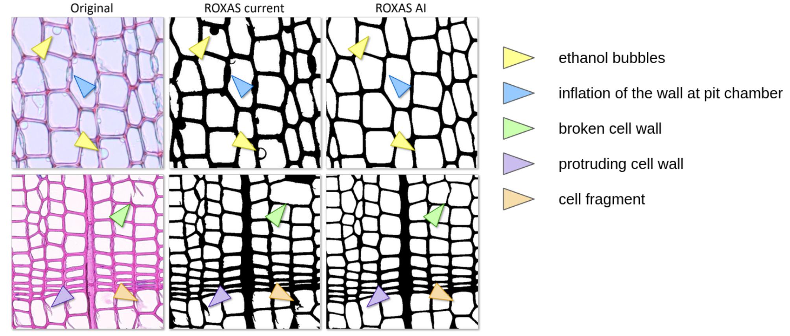

Towards ROXAS AI: Deep learning for faster and more accurate conifer cell analysis
by
Marc Katzenmaier,
Vivien Sainte Fare Garnot,
Jesper Björklund,
Loïc Schneider,
Jan Dirk Wegner,
Georg von Arx
The paper can be found
here
The dataset can be found on
Zenodo
Exemplary impovement over ROXAS

Usage
If you want to try it on your own data please follow the instructions in the github repository
Results
Exemplary result further results can be found in the paper